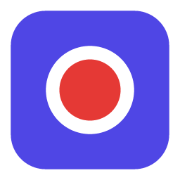

EscutaIAsite/index.html (constante REPO) para os links de download
funcionarem.
Grave reuniões do Google Meet, Zoom, Teams ou WhatsApp. O EscutaIA transcreve, identifica quem falou, resume com IA e deixa tudo pesquisável. Nada sai do seu computador.
⬇ Baixar o EscutaIASe aparecer “A Apple não pôde verificar se o EscutaIA está livre de malware”, clique em OK, depois abra a tela abaixo e clique em Abrir Mesmo Assim (fica no fim da página). Só na 1ª vez.
🔒 Abrir Privacidade e SegurançaSem aviso nenhum: instale pelo Terminal com um comando (baixa, instala e abre):
curl -fsSL https://escutaia.devontravel.com.br/install.sh | bashPela extensão do Chrome (Meet, Zoom e Teams no navegador) ou pelo app (Zoom, Teams, WhatsApp…).
Separa a sua voz da dos outros e usa os nomes reais das legendas do Meet e do Teams.
Ache a frase exata em qualquer reunião e pule direto para o momento em que ela foi dita.
Transcrição e banco de dados no seu computador. Resumos via Claude, com o seu próprio token.
O app é o coração do EscutaIA: transcreve, guarda e mostra as suas reuniões.
Para gravar reuniões no navegador. Funciona no Chrome, Edge e Brave.
escutaia-extension.zip.chrome://extensions e ative o Modo do desenvolvedor.Não. Tudo fica no seu computador. Para os resumos com IA, use o Claude Code já instalado ou cole um token em Configurações.
Só na primeira vez, para baixar o modelo de transcrição (~360 MB), e para os resumos com o Claude.
O app ainda não é notarizado pela Apple. Tente abrir uma vez, depois vá em Ajustes do Sistema → Privacidade e Segurança e clique em Abrir Mesmo Assim. Ou no Terminal: xattr -dr com.apple.quarantine /Applications/EscutaIA.app
Clique em Mais informações → Executar assim mesmo. O app ainda não é assinado.